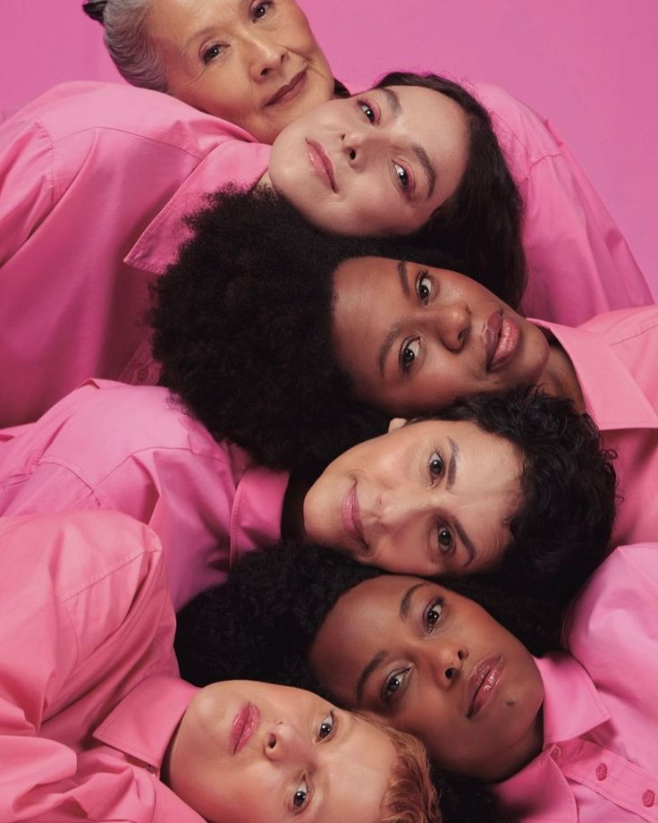
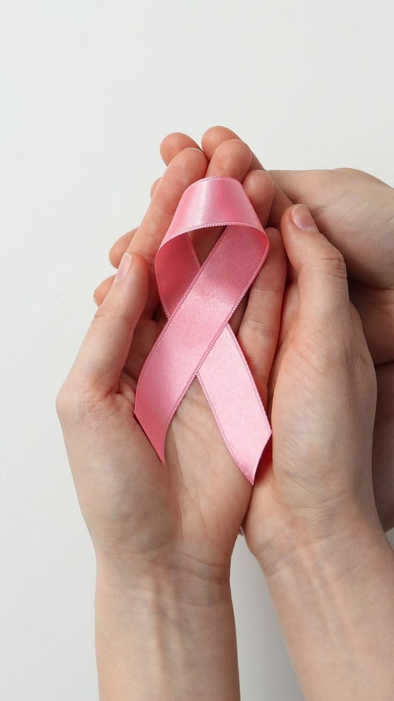
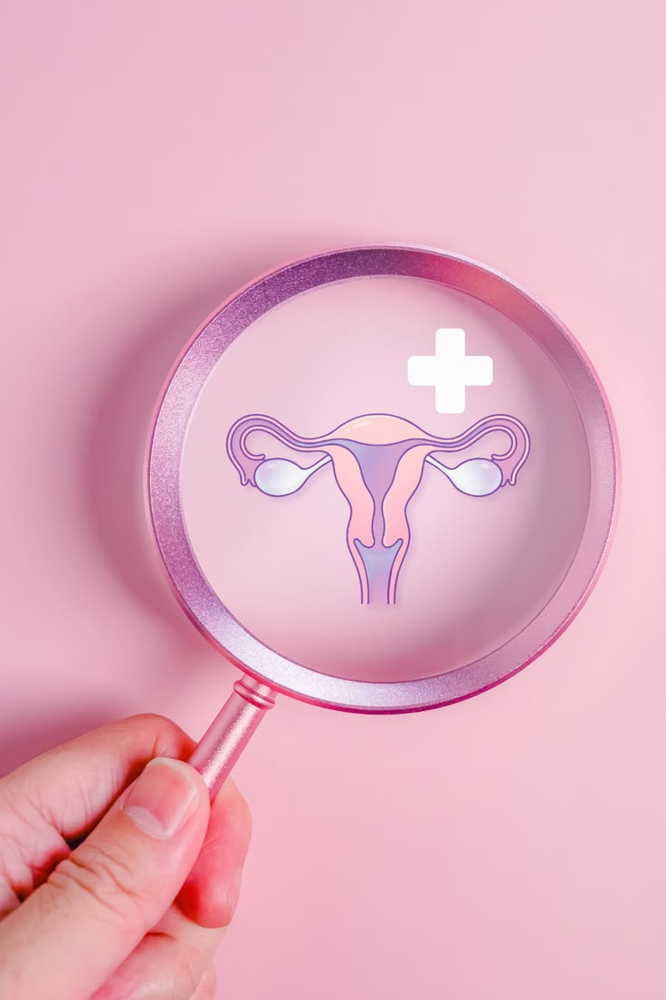
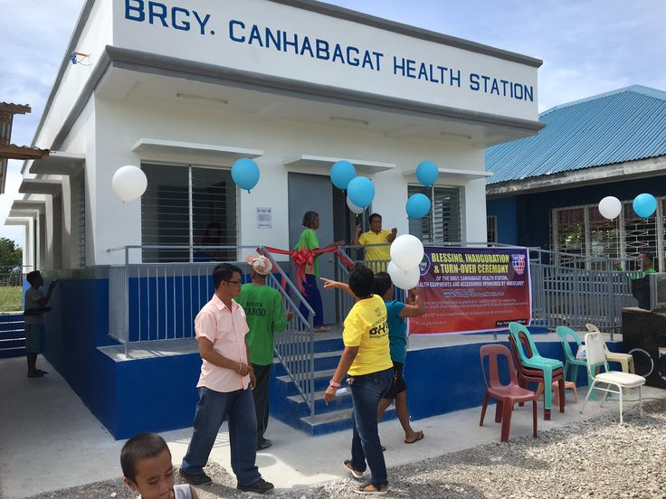
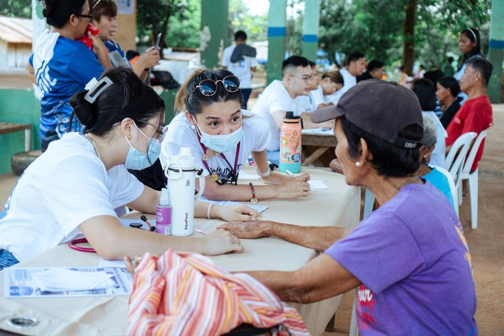
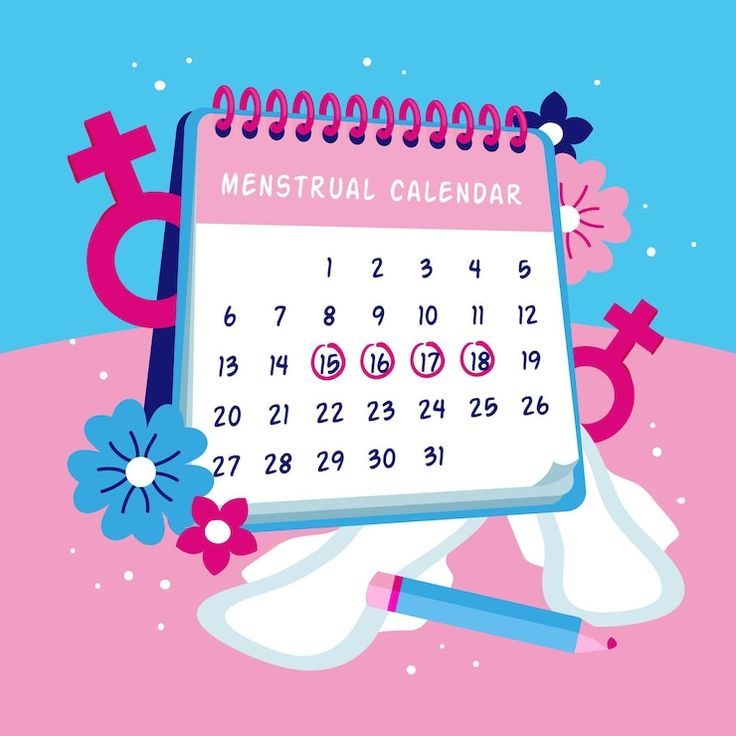

Women's Reproductive Health Access
Your health. Your rights. Your hub.
Understand the Responsible Parenthood and Reproductive Health Act, learn the signs of PCOS and endometriosis, and find out how to access care in the Philippines.

Why it matters
Reproductive health conditions are common, yet often go undiagnosed. PCOS alone affects an estimated 8–13% of reproductive-age women worldwide.
0
of women with PCOS are undiagnosed, according to WHO.
0
of women and girls of reproductive age have endometriosis.
0
women and girls are affected by endometriosis worldwide.
Source: WHO fact sheets on PCOS and endometriosis (see References).
RA 10354 Breakdown
The Responsible Parenthood and Reproductive Health Act of 2012, commonly called the RH Law.
What does the law cover?
Access to information and services on family planning, maternal and newborn care, emergency obstetric care, adolescent and youth reproductive health, prevention and management of reproductive tract infections including HIV/AIDS, treatment of breast and reproductive tract cancers, and infertility services, among other areas.
Who gets priority?
Government programs are directed to prioritize poor and marginalized women and households, including PhilHealth coverage for indigent women.
Does it legalize abortion?
No. Abortion remains illegal in the Philippines. The law requires that women with abortion complications receive humane, non-judgmental care.
What about reproductive health education?
The law provides for age- and development-appropriate reproductive health education in schools, as determined with the Department of Education.
What did the Supreme Court change?
In 2014, the Court upheld the law but struck down or limited several provisions, including spousal consent for married persons and minors' access to services without parental consent (with exceptions for life-threatening cases). It also struck down provisions penalizing providers who refuse, on religious grounds, to give services or information.
PCOS & Endometriosis
Two common conditions often dismissed as "normal." Choose one to learn more.

Polycystic Ovary Syndrome (PCOS)
A hormonal condition that affects ovulation and can raise levels of androgens (male-type hormones).
Common signs
- Irregular, infrequent, or missed periods
- Excess facial or body hair (hirsutism)
- Acne and oily skin
- Thinning scalp hair
- Difficulty getting pregnant
Diagnosis
Usually requires two of three criteria (irregular ovulation, signs of high androgens, polycystic-appearing ovaries on ultrasound), after a doctor rules out other causes.
Management
Depends on your goals: lifestyle changes, medication to regulate periods or manage symptoms, and fertility treatment. PCOS is linked to a higher risk of type 2 diabetes, so regular monitoring matters.

Endometriosis
Tissue similar to the uterine lining grows outside the uterus, causing inflammation and pain.
Common signs
- Painful periods that disrupt daily life
- Chronic pelvic pain
- Pain during or after sex
- Pain with bowel movements or urination
- Heavy bleeding and difficulty getting pregnant
Diagnosis
A doctor considers your symptoms and history, performs an exam, and may use ultrasound or MRI. Laparoscopy can confirm it. Diagnosis is often delayed, so speak up early.
Management
Options include pain relief, hormonal treatment, and surgery. There is currently no cure, but symptoms can be managed.
⚠️ Educational only, not a diagnosis. Please consult a licensed health professional.
Where to Get Care
Public health services are a good starting point. Availability varies by location, so call ahead or ask your local government unit.

🏘️ Barangay Health Station
First contact for basic health information and referrals in your community.

🏥 Rural Health Unit / City Health Office
Family planning, prenatal care, and reproductive health consultations under local programs.
🩺 Government Hospitals
Specialist care, diagnostics, and referrals, including gynecology.
💳 PhilHealth
Ask about your membership status and covered benefits at philhealth.gov.ph.
📞 DOH
Programs and facility information at doh.gov.ph.
🤝 Local Women's Desk
Your LGU's Gender and Development (GAD) office can point you to women's health programs.
Interactive Tools
Myth vs Fact (tap a card to flip)
Cycle Estimator

Estimate only. Cycles vary, and irregular cycles can be a sign of PCOS or other conditions. Tracking for 2–3 months and sharing it with a doctor is more useful than any calculator.
Prepare for Your Checkup
0 of 6 done
RH Law Quiz
Informed women make empowered choices.
Share this page with someone who needs it.
References
- Republic Act No. 10354, Responsible Parenthood and Reproductive Health Act of 2012. Official Gazette. officialgazette.gov.ph
- Supreme Court of the Philippines. Imbong v. Ochoa, G.R. No. 204819, April 8, 2014. lawphil.net
- World Health Organization. Polycystic ovary syndrome (fact sheet). who.int
- World Health Organization. Endometriosis (fact sheet). who.int
- Department of Health, Philippines. doh.gov.ph
- Philippine Health Insurance Corporation. philhealth.gov.ph
- Photos: credit each photographer and site (Unsplash, Pexels or Pixabay) here, e.g. "Photo by Name on Unsplash."